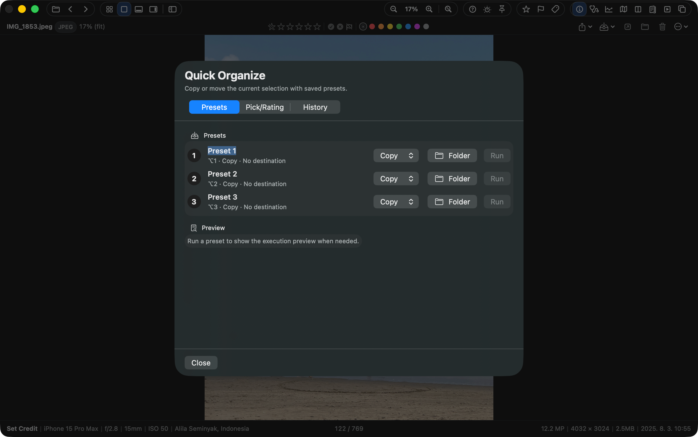

Quick Organize
Keep only Pick and Rating 5 workflows in the fast organize menu, so repeated sorting stays deliberate.
FAST PHOTO REVIEW FOR MAC
Open folders, RAW files, ZIP archives, and videos directly.
Review, compare, and organize without an import step.
Pro Layout View · Quick Organize
ZIP · Map · Batch Actions
Supports: RAW (ARW/CR2/CR3/NEF/DNG/RAF/ORF/RW2) + JPG/PNG/HEIC/TIFF + Video (MP4/MOV/M4V) + Direct ZIP Browsing

NEW REVIEW SURFACE
Press Tab when a folder needs more than simple viewing. Action strip, photo info, filmstrip context, map, histogram, and batch actions stay close without taking over the app.
Use Pick, Reject, ratings, labels, GPS context, and export recipes directly in the viewer. The speed-first main view stays clean when Pro Layout View is off.

Keep only Pick and Rating 5 workflows in the fast organize menu, so repeated sorting stays deliberate.
Use concise location, EXIF, histogram, and Quick Check context when a photo needs more inspection.
Preview export, copy, and move recipes before running them across the selected review set.



SnapView is built for people who want simple viewing first, and light organization only when needed.
Open instantly with no setup, and see only what matters. SnapView keeps viewing smooth and enjoyable, not heavy or distracting. (W, 0/9)
Even after a big shooting day, Grid stays easy to scan. See everything at once and jump to the shot you want without breaking flow. (Q, =/-)

Open ZIP archives directly and review the images inside like a normal folder. It keeps archived albums useful without a separate extraction step.

Press Tab for a denser review layout with action and info strips. Ratings, flags, labels, map, histogram, and batch actions stay available without leaving the viewer.
Pick the best shot instantly and strip away exact duplicates. AI analysis (K), multi-compare (C), and duplicate cleanup tools (Cmd+Shift+D) make your choices fast and precise.


SnapView keeps photo viewing enjoyable, not a project.
EARLY FEEDBACK
35 App Store ratings worldwide. Every current rating is 5-star.
Quick Check highlights useful signals like closed eyes, focus, and exposure. It supports your judgment without forcing decisions.


Your blazing-fast first culling pass in SnapView instantly syncs with your work tools, without heavy catalog imports.
When GPS data exists, SnapView keeps location context close to the review surface. Check the place, camera data, and image context without leaving the flow.
Turn a finished review set into action. Preview copy, move, and export recipes before applying them to the selected photos.
Free. No catalog. No waiting.
The DMG version provides unrestricted file management and the latest features first. The App Store version is a stable sandboxed release, which may require permission prompts for file access.